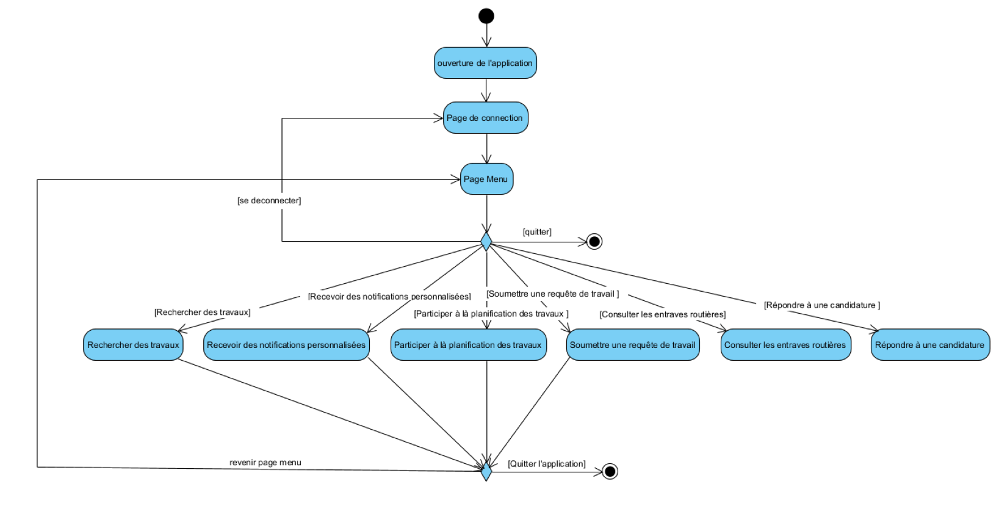
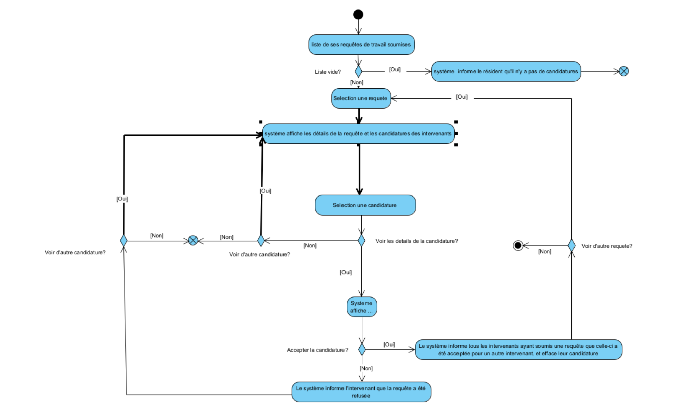
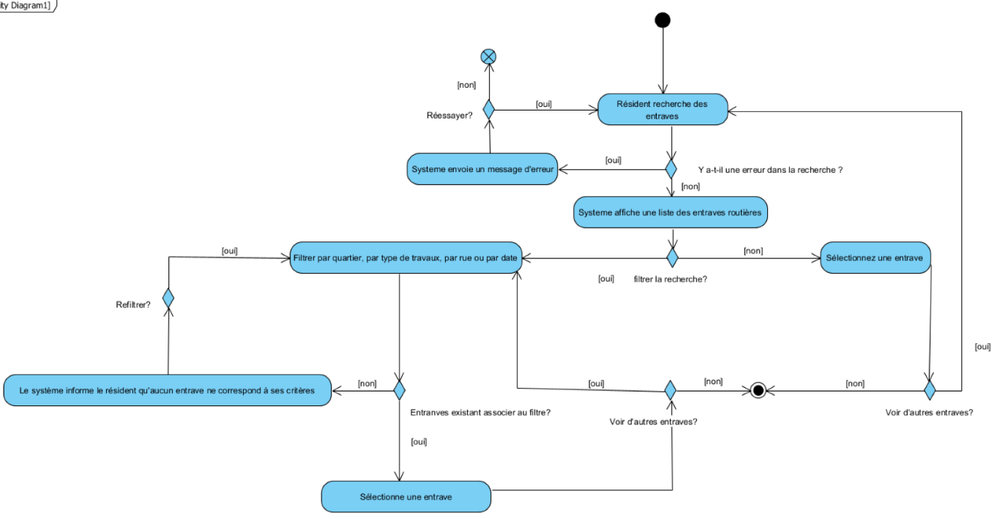
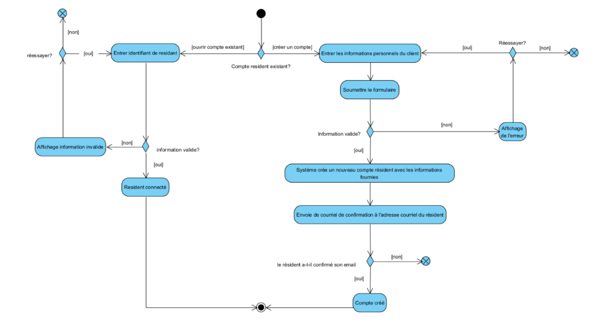
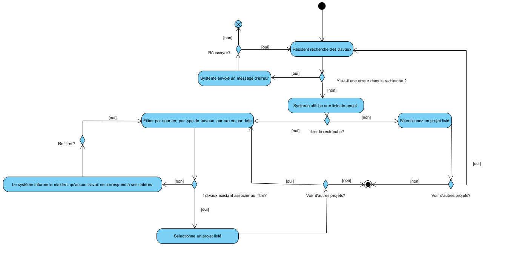
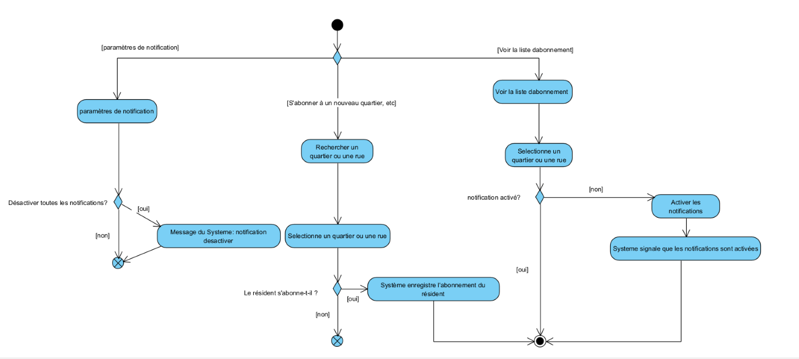
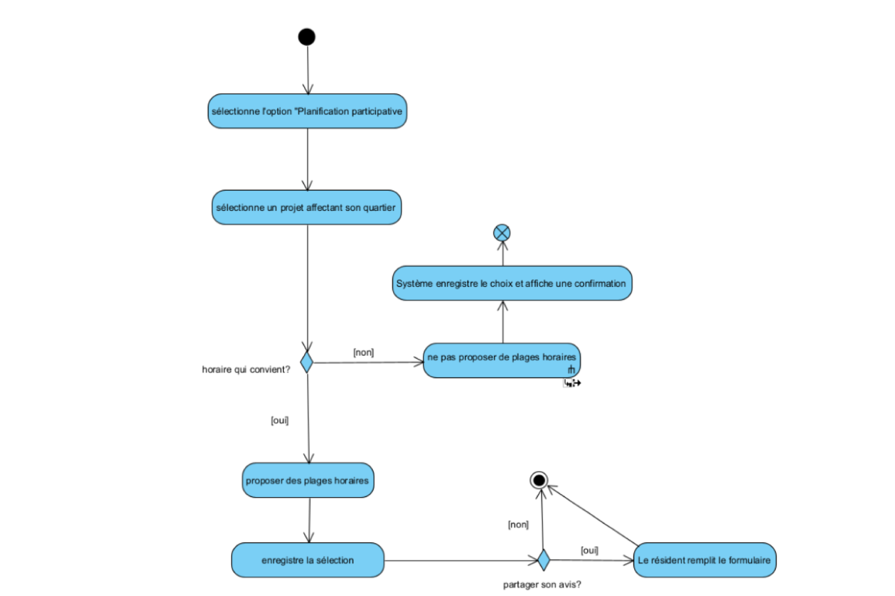
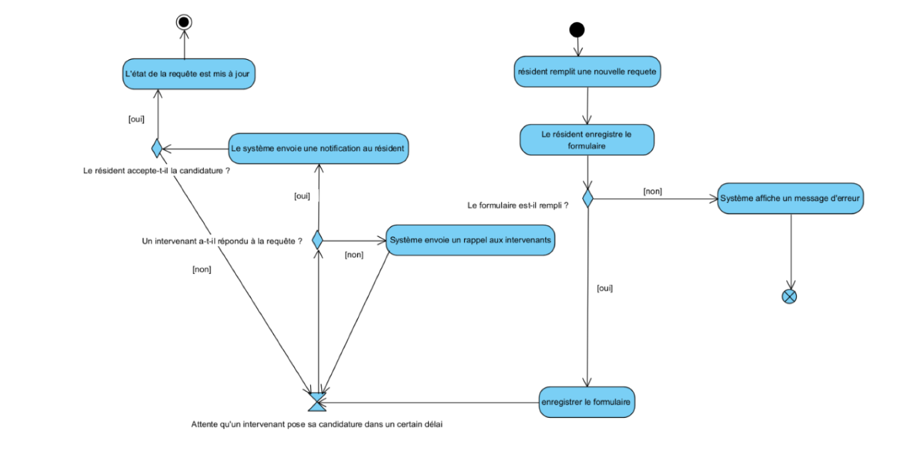
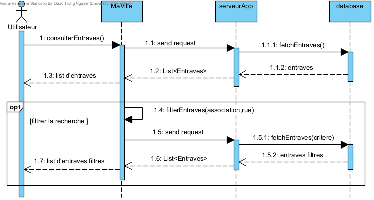

Cadre du projet
Introduction
MaVille est une application en ligne de commande conçue pour aider les résidents de Montréal à mieux gérer et suivre les travaux publics et privés dans leur quartier. Le projet vise à améliorer la communication entre les citoyens, la ville, et les intervenants, afin de minimiser les perturbations liées aux travaux. L'application permet aux résidents de consulter les travaux en cours, de signaler des problèmes, et de soumettre des requêtes. Quant aux intervenants, ils peuvent soumettre des projets de travaux et mettre à jour leurs statuts.
Échéancier
-
Semaine 1 (jusqu'au 23 septembre)
- Analyse des exigences et clarification : Préparation et envoi des trois questions au client.
- Responsable : Mamour, Olivier, Trung
-
Semaine 2 (24 - 30 septembre)
- Création du glossaire et définition des cas d'utilisation.
- Développement des diagrammes d'activités pour les résidents.
- Responsables : Mamour (glossaire), Olivier (cas d'utilisation), Trung (diagrammes)
-
Semaine 3 (1 - 7 octobre)
- Développement du prototype en Java (interface en ligne de commande).
- Responsable : Olivier
-
Semaine 4 (8 - 11 octobre)
- Analyse des risques et définition des besoins.
- Finalisation du rapport HTML (introduction, échéancier, analyse).
- Responsables : Trung (risques et besoins), Mamour (rapport et besoins)
La remise du livrable est prévue pour le 11 octobre.
Exigences
Après de nombreuses rencontres avec le client et une familiarisation avec les activités de recyclage et compostage, nous avons préparé un glossaire rassemblant les termes et expressions clés caractérisant l'environnement.
Glossaire
- Résident
- Personne vivant à Montréal, concernée par les travaux.
- Intervenant
- Entité réalisant des travaux (entreprise, entrepreneur, particulier).
- Utilisateur
- Individu utilisant l'application "MaVille" (résident ou intervenant).
- Travaux
- Interventions réalisées sur la voie publique ou dans des lieux privés.
- Quartier de Montréal
- Zone géographique spécifique de la ville.
- MaVille
- Application dédiée à la gestion et à l'information sur les travaux à Montréal.
- Info entraves et travaux
- Service fournissant des détails sur les entraves à la circulation.
- Planification participative
- Processus permettant aux résidents d'exprimer leurs préférences sur les horaires de travaux.
- Soumission de requête
- Action de signaler un besoin de travaux ou un problème à la ville.
- Notification
- Alerte envoyée aux utilisateurs concernant des changements ou des nouvelles. Types de notifications : notifications de changements de projets, de nouveaux projets, de retards ou d'annulations, ou de nouvelles entraves.
- Infos techniques
- Détails sur l'architecture, la sécurité et les fonctionnalités de l'application.
- Informations personnelles
- Données des utilisateurs, telles que nom, adresse et contact.
- Types de travaux
- Catégories d'interventions : travaux routiers, travaux de gaz ou électricité, construction ou rénovation, entretien paysager, travaux liés aux transports en commun, travaux de signalisation et éclairage, travaux souterrains, travaux résidentiels, entretien urbain, entretien des réseaux de télécommunication.
- Information de projet
- Détails spécifiques sur chaque projet de travaux.
- S'inscrire comme résident
- Processus d'enregistrement pour accéder aux fonctionnalités de l'application.
- Consulter les travaux en cours ou à venir
- Fonctionnalité permettant aux utilisateurs de voir les projets en cours et prévus.
- Recherche de travaux
- Outil pour trouver des projets par mots-clés ou filtres (type de travaux, quartier, rue).
- Recevoir des notifications
- Fonction pour alerter les utilisateurs sur des informations pertinentes (modifications de projets, nouvelles entraves, etc.).
- Soumettre requête de travail
- Action de demander la réalisation de travaux spécifiques.
- Permettre une planification participative
- Faciliter l’expression des préférences des résidents sur les travaux.
- Signaler un problème à la ville
- Fonctionnalité pour notifier la municipalité d’un problème.
- S'inscrire comme intervenant
- Processus d’enregistrement pour les entreprises ou particuliers souhaitant proposer des travaux.
- Consulter la liste des requêtes de travail
- Accéder aux demandes de travaux soumises par les résidents.
- Soumettre un nouveau projet de travaux
- Action de proposer un projet de travaux à la ville.
- Mettre à jour les informations d'un chantier
- Modifier les détails d’un projet en cours via l'application.
Cas d'utilisation

Scénarios
Scénario principal
- Le résident ouvre l'application.
- Le système affiche les options : "Se connecter" ou "S'inscrire".
- Le résident sélectionne "S'inscrire".
- Le système affiche un formulaire d'inscription.
- Le résident remplit le formulaire et le soumet.
- Le système vérifie les informations et crée le compte résident.
- Le système envoie un courriel de confirmation.
- Le résident confirme son adresse courriel.
- Le système active le compte et confirme la réussite de l'inscription.
Scénarios alternatifs
Scénario principal
- Le résident sélectionne l'option "Rechercher des travaux".
- Le système redirige vers la page de recherche.
- Le résident voit plusieurs champs de filtrage pour sa recherche (titre de travaux, type de travaux).
- Le résident remplit les filtres selon ses préférences.
- Le système affiche une liste de résultats pertinents.
- le résident sélectionne un projet spécifique dans la liste pour en savoir plus.
- Le système affiche les détails complets du projet.
Scénarios alternatifs
Scénario principal
- Le résident sélectionne l'option "Consulter les entraves routières".
- Le système redirige le résident vers la page des entraves routières.
- Le résident fait une recherche.
- Le résident voit des options de filtrage (par travail spécifique ou par rue).
- Le résident applique les filtres selon son besoin.
- Le système affiche la liste des entraves correspondantes.
- Le résident sélectionne une entrave pour obtenir plus de détails.
- Le système affiche les informations complètes de l'entrave.
Scénarios alternatifs
Scénario principal
- Le résident accède à la section "Notifications".
- Le système affiche les abonnements actuels (par défaut, son quartier est sélectionné).
- Le résident choisit de personnaliser ses notifications et sélectionne "Ajouter une zone".
- Le système affiche des options pour choisir un quartier ou une rue spécifique.
- Le résident sélectionne un quartier ou entre le nom d’une rue.
- Le système enregistre les zones sélectionnées pour les notifications.
- Le résident commence à recevoir des notifications automatiques pour les zones choisies.
Scénarios alternatifs
Scénario principal
- Le résident accède à la section "Planification des travaux" dans l'application.
- Le système affiche les plages horaires proposées par défaut pour son quartier.
- Le résident choisit une plage horaire qui lui convient et soumet sa préférence.
- Le système enregistre la préférence du résident et l’ajoute à la liste des préférences du quartier.
- Le résident reçoit une confirmation que sa préférence a bien été enregistrée.
Scénarios alternatifs
Scénario principal
- Le résident ouvre l’application et se connecte.
- Le résident choisit "Soumettre une requête de travail".
- Le système affiche un formulaire.
- Le résident remplit les informations nécessaires (titre, description, type de travail, date de début).
- Le résident soumet la requête.
- Le système envoie la requête aux intervenants.
- Le résident reçoit une notification lorsqu'un intervenant postule.
Scénarios alternatifs
Scénario principal
- Le résident accède à la liste de ses requêtes de travail soumises.
- Le système affiche les détails de la requête et les candidatures des intervenants.
- Le résident sélectionne une candidature pour en savoir plus.
- Le système affiche les détails de la candidature (nom de l’intervenant, proposition de dates, etc.).
- Le résident choisit de accepter ou refuser la candidature.
Scénarios alternatifs
Scénario principal
- L'intervenant ouvre l’application et se connecte.
- L'intervenant sélectionne "S'inscrire comme intervenant".
- Le système affiche un formulaire d'inscription.
- L'intervenant remplit les champs et soumet le formulaire.
- Le système enregistre les informations et envoie un courriel de confirmation.li>
- L'intervenant clique sur le lien de confirmation.
- Le système active le compte et redirige l'intervenant vers la page de connexion.
Scénarios alternatifs
Scénario principal
- L'intervenant sélectionne "Consulter les requêtes de travail".
- Le système affiche la liste des requêtes disponibles.
- L’intervenant applique des filtres pour affiner la recherche.
- Le système affiche les requêtes filtrées.
- L’intervenant choisit une requête et consulte les détails.
- Le système affiche les détails de la requête choisie.
- Si l'intervenant veux postuler pour cette requête, on passe à Soumettre une candidature
Scénarios alternatifs
Scénario principal
- L'intervenant sélectionne "Soumettre un nouveau projet".
- Le système affiche le formulaire de soumission du projet.
- L'intervenant remplit les informations du projet.
- L'intervenant soumet le projet.
- Le système vérifie et enregistre le projet avec le statut "Prévu".
- Le système confirme la soumission et envoie une notification à l'intervenant.
Scénarios alternatifs
Scénarios alternatifs
Scénario principal
- L’intervenant sélectionne un chantier dans la liste des projets.
- Le système affiche les détails du chantier.
- L’intervenant modifie les informations (description, date de fin, statut).
- L’intervenant sauvegarde les modifications.
- Le système confirme la mise à jour et informe les résidents concernés.
Scénarios alternatifs
Scénario principal
- L'intervenant sélectionne une requête à laquelle il souhaite postuler.
- Le système affiche les détails de la requête.
- L'intervenant clique sur "Soumettre ma candidature".
- Le système affiche un formulaire avec les champs nécessaires
- L'intervenant remplit le formulaire et clique sur "Soumettre".
- Le système confirme que la candidature a été soumise et notifie le résident.
Scénarios alternatifs
Diagramme d'activités
Ouverture application
Répondre à une candidature
Consulter les entraves routières
S'inscrire comme résident
Rechercher des travaux
Recevoir des notifications personnalisées
Participer à là planification des travaux
Soumettre une requête de travail
Analyse
Risques
- Lenteur ou surcharge du système : Si le nombre de requêtes est trop élevé, cela peut provoquer des retards et frustrer les résidents. Solution : Mettre en place des priorités pour le traitement des requêtes et renforcer l'équipe de support, ainsi qu'utiliser un système de suivi pour répondre rapidement.
- Retards dus à la météo : Les conditions météorologiques imprévues peuvent ralentir les travaux. Solution : Garder une communication ouverte avec les résidents pour les tenir au courant des nouveaux délais.
- Fuites de données personnelles : La gestion des informations personnelles, comme les adresses e-mail, expose le système à des cyberattaques. Solution : Utiliser le chiffrement des données et l'authentification à deux facteurs.
- Mauvaise communication entre résidents et intervenants : Une communication mauvaise peut mener à des malentendus sur les travaux et les attentes des résidents. Solution : Améliorer les canaux de communication pour clarifier les informations.
- Résistance des résidents aux changements : Certains résidents peuvent être contre certains travaux à cause du bruit ou d'autres préoccupations. Solution : Communiquer clairement avec les résidents pour expliquer les travaux et écouter leurs inquiétudes.
Besoins non-fonctionnels
- Temps de réponse Justification : L'application doit répondre en moins de 2 secondes afin d'éviter une attente trop longue et d'assurer la satisfaction des utilisateurs. Exemple : Lors de la consultation des projets de travaux, les résultats doivent s'afficher presque instantanément.
- Fiabilité Justification : L'application doit être disponible 99,9 % du temps, garantissant ainsi une utilisation sans interruption. Exemple : Si un utilisateur consulte des informations urgentes sur les travaux à venir, l'application doit être accessible sans panne.
- Utilisabilité Justification : L'interface doit être simple, intuitive et facile à naviguer, afin que les utilisateurs trouvent ce qu'ils cherchent rapidement et sans confusion. Exemple : La recherche de travaux doit être facilement accessible avec des filtres simples comme le type de travaux et le quartier.
- Sécurité Justification : L'application doit protéger les données personnelles des utilisateurs grâce à des mesures de sécurité avancées, telles que le chiffrement des données sensibles. Exemple : Les informations personnelles des résidents doivent être cryptées pour éviter toute fuite de données.
- Capacité d'adaptation Justification : L'application doit pouvoir gérer une augmentation du nombre d'utilisateurs sans ralentir ou se bloquer. Exemple : L’application doit être capable de fonctionner normalement même si le nombre d’utilisateurs dépasse 100 000 personnes simultanément.
Besoins matériels
- Les serveurs
- Ordinateurs pour le développement
- Matériel utilisateur
L'application nécessite Java pour fonctionner correctement sur certains appareils. Exemple : Un utilisateur doit avoir la dernière version de Java Runtime Environment (JRE) pour installer l’application sur son ordinateur.
Solution de stockage
Pour Maville, on va utiliser une base de données comme MySQL pour gérer les infos des utilisateurs et des travaux. Pour les fichiers lourds, comme les images ou les documents, on utilisera un service de stockage cloud comme Amazon S3. Des sauvegardes automatiques aideront à protéger toutes ces infos.
Solution d'intégration
C’est important d’utiliser des API pour connecter Maville à d’autres systèmes. Ça facilitera la synchronisation des données et rendra l'expérience des utilisateurs encore meilleure. Exemple :L'intégration d'une API de cartographie (comme Google Maps) pour afficher les projets de travaux et les entraves routières sur une carte interactive.
Conception
Architecture
Pour le projet MaVille, nous avons choisi une architecture 3-tier, qui est bien adaptée aux applications nécessitant une interaction utilisateur et une gestion centralisée des données
Présentation de l'Architecture 3-tier dans l'appli Maville
-
Niveau 1 : Client (Frontend)
- Utilisateurs : Les résidents et intervenants interagissent avec l'application via une interface utilisateur, accessible depuis une application web ou mobile.
- Moyen de communication : L'interface communique avec le serveur d'application via des requêtes HTTP/REST ou GraphQL pour envoyer et recevoir des données.
- Technologies possibles : React.js ou Vue.js pour une application web ; Flutter ou React Native pour une application mobile.
-
Niveau 2 : Serveur d'Application (Backend)
- Rôle : Centralise la logique métier, applique les règles d'application et gère la coordination avec la base de données et les services externes
-
Composantes clés:
- API RESTful ou GraphQL : Permet de gérer les requêtes provenant du frontend.
- Gestion des utilisateurs : Authentification et autorisation pour les résidents et intervenants.
- Notifications : Envoi de notifications personnalisées aux utilisateurs.
- Technologies possibles : Node.js avec Express, Django, ou Spring Boot.
- Communication : Échange de données avec le frontend et accès aux données de la base.
-
Niveau 3 : Base de Données (Stockage)
- Rôle : Stockage de toutes les informations sur les utilisateurs, les travaux en cours, les requêtes, et les notifications.
- Technologie : PostgreSQL ou MySQL pour une base de données relationnelle.
-
Données gérées :
- Informations des utilisateurs (résidents, intervenants)
- Détails des projets et travaux
- Préférences des résidents pour les horaires de travaux
Composantes Additionnelles
- Service de Notifications : Un service externe, comme Firebase Cloud Messaging, pour envoyer des notifications en temps réel aux utilisateurs.
- API de Géolocalisation : Utilisation d’une API externe (comme Google Maps API) pour localiser les travaux sur une carte et fournir une interface visuelle pour les résidents.
Diagrammes de classes
Diagrammes de séquence
Consulter les entraves
Soumettre une requête de travail
Consulter la liste des requêtes de travail
Choix du design
Nous avons choisi une architecture 3-tier pour MaVille, car elle permet de bien structurer l'application et de répondre aux besoins spécifiques des résidents et des intervenants. Cette architecture est divisée en trois parties principales :
1. Interface utilisateur (frontend) / Vue : Cette couche est dédiée à l'expérience directe des utilisateurs. Les résidents y consultent les travaux, soumettent des requêtes ou reçoivent des notifications. Les intervenants, eux, l’utilisent pour gérer leurs projets, soumettre des réponses aux requêtes et mettre à jour les informations. Nous avons créé des vues spécifiques pour chaque type d’utilisateur, comme le ResidentMenu et l'IntervenantMenu, qui permettent de naviguer facilement à travers les différentes options disponibles.
2. Serveur d'application (backend) / Contrôleur : C’est ici que la logique et les processus de l'application sont gérés. Par exemple, le UserController s’occupe de la gestion des utilisateurs (résidents et intervenants), en vérifiant les informations à l'inscription et en contrôlant l'accès. Le TravauxController et le ProjetController gèrent les informations liées aux travaux et projets. D’autres contrôleurs comme le CandidatController et le RequeteController s'occupent respectivement des candidatures et des requêtes soumises par les résidents. Nous avons conçu une hiérarchie de classes où chaque contrôleur hérite d'une classe principale Controller, ce qui permet de centraliser les fonctionnalités communes et de simplifier la gestion de l’application.
3. Base de données (modèles): Cette partie s’occupe de stocker toutes les informations importantes, comme les profils, les projets, ou les entraves routières. Nous avons créé des modèles pour chaque entité, tels que Candidat, RequeteTravail, Entrave, Travaux, Projet, Utilisateur, et Notification. Ces modèles facilitent la gestion et l'accès aux données, permettant de récupérer rapidement les informations nécessaires pour afficher les travaux en cours, les projets soumis, ou les notifications envoyées aux utilisateurs.
Cette structure rend l'application facile à maintenir et à faire évoluer. Chaque couche et chaque composant (vue, contrôleur, modèle) peut être modifié indépendamment, ce qui garantit une grande flexibilité et réactivité aux besoins des utilisateurs. De plus, cette organisation permet d’intégrer des services externes (notifications, géolocalisation) et assure une bonne sécurité en centralisant le contrôle des accès via le backend. Avec cette architecture, MaVille peut offrir une expérience fluide et fiable, même avec des informations mises à jour en temps réel.
Prototype
Ouvrir la ligne de commande et naviguer jusqu'à l'emplacement du fichier MaVille-Groupe-46.jar, exécuter la commande java -jar MaVille-Groupe-46.jar pour commencer le prototype. Les comptes préconfigurées pour l'intervenant/le résident (courriel:mot de passe) : (intervenant1@mail.com:password1), (intervenant2@mail.com:password2), (resident1@mail.com:password1), (resident2@mail.com:password2) .